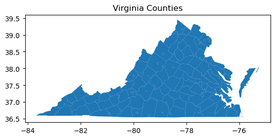
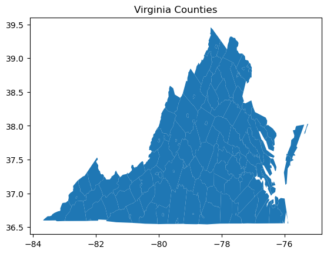
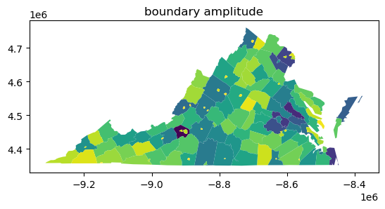
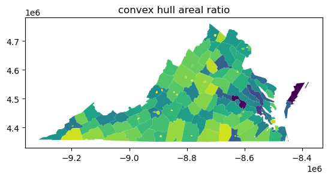
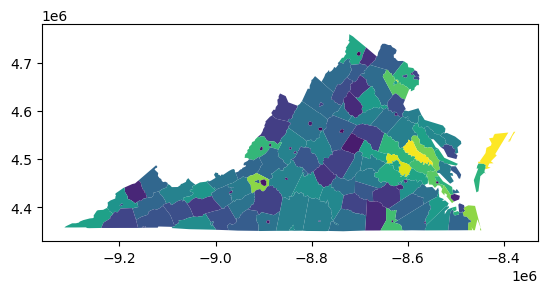
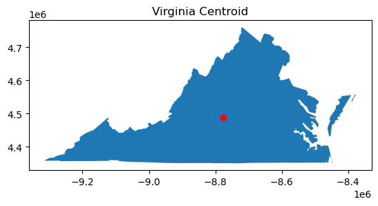
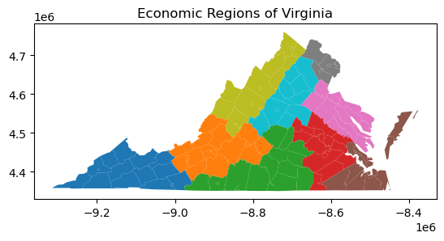

This page was generated from build/.jupyter_cache/executed/30510b1dc1186022a8bd36d443aa0971/base.ipynb.
Interactive online version:

[1]:
import pandas as pd
import geopandas as gpd
import shapely
import libpysal
import matplotlib.pyplot as plt
from esda import shape
[2]:
counties = gpd.read_file(libpysal.examples.get_path("virginia.shp"))
[3]:
counties.plot()
plt.title("Virginia Counties")
[3]:
Text(0.5, 1.0, 'Virginia Counties')

[4]:
ax = counties.plot()
ax.set_aspect("auto")
plt.title("Virginia Counties")
[4]:
Text(0.5, 1.0, 'Virginia Counties')

[5]:
counties.to_crs(epsg=3395, inplace=True)
counties.plot()
plt.title("Virginia Counties")
[5]:
Text(0.5, 1.0, 'Virginia Counties')
[6]:
lwd_lat_long = shape.length_width_diff(counties.to_crs(epsg=4326))
lwd_mercator = shape.length_width_diff(counties)
# plt.scatter(lwd_lat_long, lwd_mercator)
df = pd.DataFrame({"lwd_lat_long": lwd_lat_long, "lwd_mercator": lwd_mercator})
df
[6]:
| lwd_lat_long | lwd_mercator | |
|---|---|---|
| 0 | -0.057152 | 7834.746553 |
| 1 | -0.169186 | -4082.002847 |
| 2 | -0.037289 | 4894.678174 |
| 3 | -0.008430 | 1097.722973 |
| 4 | -0.070480 | 7499.467262 |
| ... | ... | ... |
| 131 | -0.021633 | -1742.967132 |
| 132 | 0.023273 | 4775.942741 |
| 133 | -0.006683 | 111.373760 |
| 134 | -0.015362 | 665.530662 |
| 135 | -0.041515 | -3880.980596 |
136 rows × 2 columns
[7]:
bounds_lat_long = shapely.bounds(counties.to_crs(epsg=4326).geometry)
ymin_lat_long, ymax_lat_long = bounds_lat_long[:, [1, 3]].T
length_lat_long = abs(ymax_lat_long - ymin_lat_long)
bounds_mercator = shapely.bounds(counties.geometry)
ymin_mercator, ymax_mercator = bounds_mercator[:, [1, 3]].T
length_mercator = abs(ymax_mercator - ymin_mercator)
df["scaled_lwd_lat_long"] = df["lwd_lat_long"] / length_lat_long
df["scaled_lwd_mercator"] = df["lwd_mercator"] / length_mercator
df
[7]:
| lwd_lat_long | lwd_mercator | scaled_lwd_lat_long | scaled_lwd_mercator | |
|---|---|---|---|---|
| 0 | -0.057152 | 7834.746553 | -0.128097 | 0.122680 |
| 1 | -0.169186 | -4082.002847 | -0.361438 | -0.061054 |
| 2 | -0.037289 | 4894.678174 | -0.130227 | 0.119615 |
| 3 | -0.008430 | 1097.722973 | -0.131204 | 0.119460 |
| 4 | -0.070480 | 7499.467262 | -0.142612 | 0.106586 |
| ... | ... | ... | ... | ... |
| 131 | -0.021633 | -1742.967132 | -0.875289 | -0.510157 |
| 132 | 0.023273 | 4775.942741 | 0.285882 | 0.424618 |
| 133 | -0.006683 | 111.373760 | -0.209971 | 0.025320 |
| 134 | -0.015362 | 665.530662 | -0.172870 | 0.054250 |
| 135 | -0.041515 | -3880.980596 | -1.500069 | -1.015612 |
136 rows × 4 columns
[8]:
counties.plot(shape.length_width_diff(counties.geometry))
plt.title("length-width difference")
[8]:
Text(0.5, 1.0, 'length-width difference')

[9]:
counties.plot(shape.boundary_amplitude(counties.geometry))
plt.title("boundary amplitude")
[9]:
Text(0.5, 1.0, 'boundary amplitude')

[10]:
counties.plot(shape.convex_hull_ratio(counties.geometry))
plt.title("convex hull areal ratio")
[10]:
Text(0.5, 1.0, 'convex hull areal ratio')

[11]:
counties.plot(shape.minimum_bounding_circle_ratio(counties))
plt.title("minimum bounding circle ratio")
[11]:
Text(0.5, 1.0, 'minimum bounding circle ratio')

[12]:
counties.plot(shape.radii_ratio(counties.geometry))
plt.title("radii ratio")
[12]:
Text(0.5, 1.0, 'radii ratio')

[13]:
plt.scatter(
shape.radii_ratio(counties.geometry),
shape.minimum_bounding_circle_ratio(counties.geometry),
)
plt.plot((0, 1), (0, 1), color="k", linestyle=":")
plt.xlim(0.2, 0.9)
plt.ylim(0.2, 0.9)
plt.xlabel("Radii Ratio")
plt.ylabel("Minimum Bounding Circle Ratio")
[13]:
Text(0, 0.5, 'Minimum Bounding Circle Ratio')

[14]:
counties.plot(shape.diameter_ratio(counties))
[14]:
<Axes: >

[15]:
counties.plot(shape.isoareal_quotient(counties))
[15]:
<Axes: >

[16]:
counties.plot(shape.isoperimetric_quotient(counties))
[16]:
<Axes: >

[17]:
plt.scatter(
shape.isoareal_quotient(counties),
shape.isoperimetric_quotient(counties),
)
plt.plot((0, 1), (0, 1), color="k", linestyle=":")
plt.xlim(0.2, 0.9)
plt.ylim(0.2, 0.9)
plt.xlabel("Isoareal Quotient")
plt.ylabel("Isoperimetric Quotient")
[17]:
Text(0, 0.5, 'Isoperimetric Quotient')

[18]:
counties.plot(shape.fractal_dimension(counties, support="hex"))
[18]:
<Axes: >

[19]:
counties.plot(shape.fractal_dimension(counties, support="square"))
[19]:
<Axes: >
[20]:
plt.scatter(
shape.fractal_dimension(counties, support="hex"),
shape.fractal_dimension(counties, support="square"),
)
plt.plot((0, 2), (0, 2), color="k", linestyle=":")
plt.xlim(0.98, 1.08)
plt.ylim(0.98, 1.08)
plt.xlabel("Fractal Dimension (hex)")
plt.ylabel("Fractal Dimension (square)")
[20]:
Text(0, 0.5, 'Fractal Dimension (square)')

[21]:
counties.plot(shape.moment_of_inertia(counties, normalize=True))
[21]:
<Axes: >

[22]:
va = counties.dissolve()
va_centroid = va.centroid
ax = va.plot()
va_centroid.plot(ax=ax, color="red")
plt.title("Virginia Centroid")
[22]:
Text(0.5, 1.0, 'Virginia Centroid')

[23]:
ax = counties.plot(shape.moment_of_inertia(counties, ref_pt=va_centroid))
va_centroid.plot(ax=ax, color="red")
plt.title("Virginia Counties MOI about Virginia Centroid")
[23]:
Text(0.5, 1.0, 'Virginia Counties MOI about Virginia Centroid')

[24]:
shape.moment_of_inertia_global(counties, normalize=True)
[24]:
0.58717002611019
[25]:
# Remove these independent cities
cities_to_remove = ["Bedford City", "Clifton Forge", "South Boston"]
counties_2020 = counties.copy()[~counties["NAME"].isin(cities_to_remove)]
# Function to remove holes
def remove_holes(geom):
if isinstance(geom, shapely.geometry.Polygon):
return shapely.geometry.Polygon(geom.exterior)
elif isinstance(geom, shapely.geometry.MultiPolygon):
return shapely.geometry.MultiPolygon([shapely.geometry.Polygon(p.exterior) for p in geom.geoms])
else:
return geom
# Boolean mask for rows to modify
mask = counties_2020["NAME"].isin(["Bedford", "Alleghany", "Halifax"])
# Apply transformation only to rows that match the mask
counties_2020.loc[mask, "geometry"] = counties_2020.loc[mask, "geometry"].apply(remove_holes)
# Reindex the GeoDataFrame
counties_2020.reset_index(drop=True, inplace=True)
regions = ['Region 8', 'Region 7', 'Region 8', 'Region 8', 'Region 8', 'Region 7', 'Region 8', 'Region 9', 'Region 7', 'Region 7', 'Region 7', 'Region 7', 'Region 9', 'Region 7', 'Region 8', 'Region 8', 'Region 7', 'Region 7', 'Region 9', 'Region 9', 'Region 6', 'Region 8', 'Region 8', 'Region 9', 'Region 8', 'Region 9', 'Region 6', 'Region 6', 'Region 6', 'Region 6', 'Region 9', 'Region 8', 'Region 6', 'Region 8', 'Region 6', 'Region 9', 'Region 6', 'Region 8', 'Region 8', 'Region 9', 'Region 9', 'Region 5', 'Region 6', 'Region 4', 'Region 9', 'Region 6', 'Region 2', 'Region 6', 'Region 4', 'Region 6', 'Region 2', 'Region 2', 'Region 8', 'Region 2', 'Region 3', 'Region 6', 'Region 3', 'Region 8', 'Region 4', 'Region 4', 'Region 2', 'Region 4', 'Region 2', 'Region 4', 'Region 6', 'Region 4', 'Region 2', 'Region 5', 'Region 1', 'Region 6', 'Region 3', 'Region 4', 'Region 2', 'Region 2', 'Region 5', 'Region 2', 'Region 2', 'Region 3', 'Region 5', 'Region 2', 'Region 1', 'Region 4', 'Region 2', 'Region 4', 'Region 2', 'Region 1', 'Region 1', 'Region 3', 'Region 4', 'Region 5', 'Region 4', 'Region 3', 'Region 4', 'Region 4', 'Region 2', 'Region 5', 'Region 2', 'Region 1', 'Region 5', 'Region 2', 'Region 5', 'Region 1', 'Region 3', 'Region 2', 'Region 3', 'Region 4', 'Region 5', 'Region 1', 'Region 3', 'Region 3', 'Region 1', 'Region 5', 'Region 5', 'Region 1', 'Region 5', 'Region 1', 'Region 1', 'Region 5', 'Region 4', 'Region 3', 'Region 1', 'Region 1', 'Region 3', 'Region 5', 'Region 3', 'Region 5', 'Region 1', 'Region 4', 'Region 3', 'Region 1', 'Region 5', 'Region 3', 'Region 1']
populations = [93355, 427082, 15060, 27981, 44630, 1144474, 41104, 73935, 484625, 235463, 14593, 24478, 7409, 156788, 84739, 23750, 16923, 42674, 53563, 13931, 160520, 2265, 77713, 20850, 51492, 37208, 143876, 27468, 28383, 18683, 113683, 4123, 31541, 25765, 10604, 39012, 9047, 22574, 22578, 45863, 14777, 33326, 12085, 111652, 27764, 6676, 14962, 18232, 25613, 10876, 31385, 5671, 7420, 33875, 16914, 10774, 9745, 6612, 334434, 31074, 4881, 24139, 80254, 227595, 39228, 371610, 16424, 12115, 19857, 8517, 13342, 6686, 16610, 79255, 80046, 55398, 96793, 21932, 70590, 99159, 39933, 42873, 98677, 22944, 25477, 6211, 13920, 15597, 18210, 15564, 28083, 11475, 6552, 33365, 33771, 184774, 54958, 35727, 12556, 16505, 39444, 25635, 60148, 15560, 11990, 10793, 137334, 28219, 33811, 15868, 29585, 17988, 235037, 3620, 457066, 29158, 53913, 96638, 11304, 30431, 22042, 21504, 17606, 251153, 50365, 97299, 15323, 5633, 13584, 6698, 8212, 42239, 17024]
counties_2020["region"] = regions
counties_2020["population"] = populations
[26]:
counties_2020.plot("region")
plt.title("Economic Regions of Virginia")
[26]:
Text(0.5, 1.0, 'Economic Regions of Virginia')

[27]:
shape.moment_of_inertia_regions(counties_2020, normalize=True, regions="region")
[27]:
Region 1 0.571706
Region 2 0.747063
Region 3 0.539548
Region 4 0.793634
Region 5 0.323609
Region 6 0.642518
Region 7 0.744163
Region 8 0.477483
Region 9 0.672687
dtype: float64
[28]:
shape.moment_of_inertia_regions(counties_2020, normalize=True, regions="region", weights="population")
[28]:
Region 1 0.622823
Region 2 0.988687
Region 3 0.549320
Region 4 2.192231
Region 5 0.984835
Region 6 0.568993
Region 7 0.950173
Region 8 0.529857
Region 9 0.796767
dtype: float64
[ ]:
[ ]: